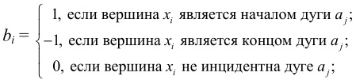
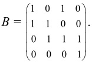
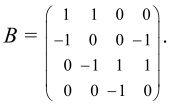

Матрицей инцидентности B = (bij) ориентированного графа называется прямоугольная матрица (n×m),
где n – число вершин, m – число ребер, у которой

Для неориентированного графа матрица инцидентности B задается следующим образом:
Пример 7.
Матрица инцидентности графа, изображенного на рис. 5, имеет вид:

Пример 8.
Матрица инцидентности ориентированного графа, изображенного на рис. 6, имеет вид:

Матрица инцидентности, так же, как и матрица смежности, полностью задает граф.
Матрицы смежности и инцидентности удобны для задания графов на ЭВМ.
Основные свойства матриц смежности и инцидентности:
- 1. Матрица смежности неориентированного графа является симметричной. Для ориентированного графа это, вообще говоря, неверно.
- 2. Сумма элементов i – ой строки или i –го столбца матрицы смежности неориентированного графа равна степени вершины xi.
- 3. Сумма элементов i – ой строки матрицы смежности ориентированного графа равна числу дуг, исходящих из xi.
- 4. Сумма элементов i – го столбца матрицы смежности ориентированного графа равна числу дуг, входящих в вершину xi.
- 5. Сумма строк матрицы инцидентности ориентированного графа является нулевой строкой.